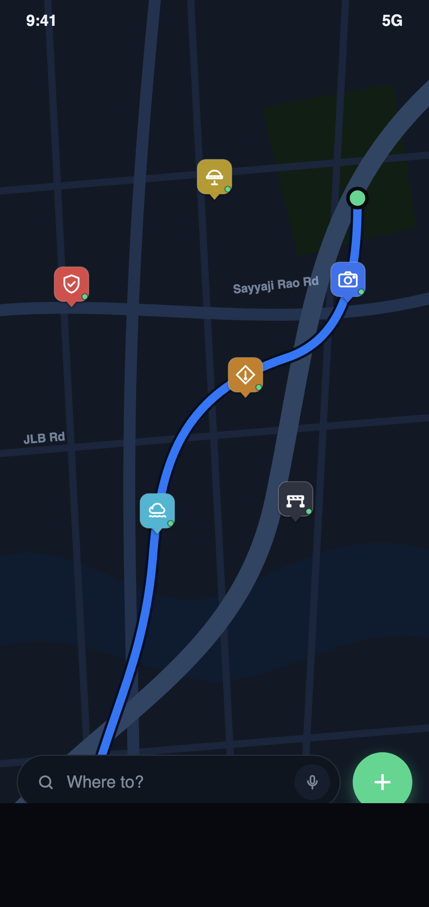

Hazard-aware routing
Routes are checked against live, confirmed reports, so you avoid trouble instead of finding it.
SEE. REPORT. SAVE.
ThirdEye is a community-powered navigation app. Drivers report potholes, waterlogging, road blocks and checkpoints, and the app routes you around them.
Potholes, flooding, closures, police checkpoints, traffic cameras and more.

Illustration of the app's map screen
Conventional GPS sees traffic. ThirdEye also sees the pothole, the flooded underpass and the barricade, then routes you around them.
Routes are checked against live, confirmed reports, so you avoid trouble instead of finding it.
Drivers report hazards as they see them, so you get a heads-up before you reach the spot.
Other drivers confirm or dispute each report as they pass, which keeps the map accurate.
Each report has a lifespan based on its type. Waterlogging clears and roadwork ends, so old reports drop off the map.
Reporters stay anonymous. Evidence photos are private and used only for moderation, never shown publicly.
Monsoon flooding, processions, excavation and checkpoints: the conditions other map apps overlook.
Open the live map and check confirmed road conditions near you and along your route.
Spotted a hazard? Report it in a few taps. Add a photo as private evidence if you want.
ThirdEye routes you, and everyone behind you, around the problem.
The same categories and icons you see in the app.
Something else in the way? Use Other to report it.
ThirdEye is launching on Android first, with iOS to follow.
Initial beta region: Mysuru, Karnataka
ThirdEye is free to download, and you can view and report hazards without paying. The app also has an optional Pro plan. [TODO: confirm Pro pricing and features before launch.]
Yes. Other users see the hazard category, its location and how recent it is, never who reported it. Evidence photos stay private and are used only for moderation.
Drivers confirm or dispute reports as they pass, and every report expires after a set time based on its type. Old reports fall off the map on their own.
ThirdEye is launching on Android first, with an iOS release planned.
The first beta covers Mysuru, Karnataka. More cities will follow.